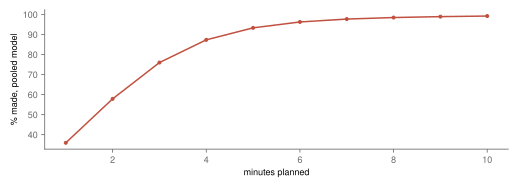
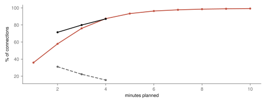
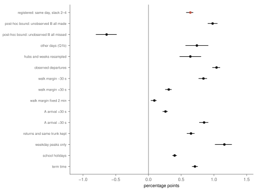
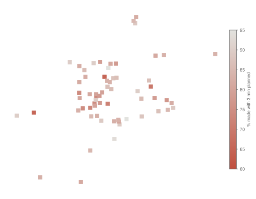

Research · Running late, part 3 · Prague trams, spring and summer 2025
Will you make your connection? Tram transfers in Prague, 2025
A pre-specified analysis of tram-to-tram connections planned two to four minutes apart finds that 80.7 % were made, and that the two lines were late together only slightly more than chance would make them; the answer for each hub and pair of lines is in the roulette below.
- made, planned 3 min apart
- 80 % 22 % cost over 5 min of extra wait; 71 % at 2 min, 87 % at 4 min
- lines late together, same day
- +0.64 pp 95 % confidence interval (CI) +0.58 to +0.68 · inside the registered ±1 point, so not supported
- bounds for uncertain connections
- −20.0 to +5.7 pp 25.7 % of connections had a planned tram that was unobserved or possibly cancelled
- connections read
- 5.0 million planned 2–4 min apart at 110 stops with four or more tram lines, 170 days
Overwhelmed? Here's the short version
- With three minutes planned between one tram's arrival and the next one's departure, a Prague tram connection was made 80 times in a hundred in 2025; with two minutes, 71; with four, 87. A connection planned three minutes apart cost over five minutes of extra wait in 22 % of cases.
- The registered question was whether the two lines are late together at a stop, which would help the connection. They are, a little: +0.64 percentage points more connections were made than with the second line's delays taken from other trips of the same day (95 % CI +0.58 to +0.68). That is inside the ±1 point set in advance as "as good as independent", so the prediction is not supported.
- For 25.7 % of connections the planned tram was unobserved or its line ran one trip short in that hour, possibly cancelled. Counting all of them as made or as missed moves the estimate between −20.0 and +5.7 points; described afterwards, most of them are only flagged by the hour, and they were made about as often as the rest (80.3 % against 80.8 %).
- Of the connections planned two to four minutes apart that cost over five minutes more wait, 40 % were lost before the hub: the arriving tram was already later than the slack at the stop before. The rest were lost on the last segment or by a late second tram.
- The roulette gives the share made for 6 624 combinations of hub, pair of lines, direction and time of day, at any slack from 1 to 10 minutes.
Photo: ŠJů · CC BY-SA 3.0, toned

A tram timetable promises connections it cannot hold. At a stop where two lines meet, the second tram is planned to leave a few minutes after the first arrives, and whether a traveller makes it depends on both trams keeping to time on the day. This part of the series asks how often that worked in Prague in 2025, and whether the two trams' delays move together, which would make the connection more reliable than their delays alone suggest.
The roulette
Pick a stop, the line you arrive on and the line you want, the time of day, and the minutes the timetable leaves you. The figure gives the share of such connections that were made in 2025, with its interval, and, for the connection as it was actually timetabled there, how often it cost more than five minutes of waiting.

The question
A connection here is an arrival of one tram line at a stop and the first departure of another line from the same stop name at least a walking margin later: a minute to get off and orient, plus the straight-line distance between the two platforms at 1.2 metres a second, which is near the walking speed field studies report for most adults4. Only stops served by at least four tram lines count; there are 111 of them, from large interchanges such as Anděl and I. P. Pavlova to busy stops on shared routes. A line that turns back the way the first came, or runs on along the same street, is not a transfer anyone needs, and was left out. The second tram leaves at the later of its observed arrival and its scheduled departure, because trams wait for their time: where departures were observed, fewer than one in two hundred left more than half a minute early at every stop but two with very few observations; the planned connection is made when that is at least the margin after the first tram's observed arrival.
The question set in advance was not how often connections fail, which depends on how tight the timetable is, but whether the two lines are late together. If the same street, junction or crowd delays both trams, a late arrival meets a late departure and the connection survives. To measure that, each arrival was set against the other trips of the second line on the same day, within an hour of the planned one, moved to the planned time so the slack stays the same: the day's conditions are kept, the link between the two particular trams is broken. The difference between the share made and that benchmark is the co-movement. A difference above one percentage point, with its whole 95 % interval, would support the prediction; a 90 % interval within plus or minus one point would read as "as good as independent", the outcome reached here. Other studies of transfers price how much travellers dislike them5; this one measures whether the timetable's promise held.
Data
The trams are those of the author's thesis: Prague Integrated Transport's stop-time history from Golemio2, 15 March to 8 September 20251, with the earlier studies' screening of planned closures and feed gaps, 170 days in all. Platforms and their positions come from the PID timetable data3. Over the season there were 19.1 million planned connections with up to ten minutes of slack, 5.6 million of them two to four minutes apart, and 46 million returns and same-street pairs left out. About 3.3 % of the trips the timetable usually runs in an hour were missing on a given day, cancelled or not tracked. One stop, Zborovská, was left out of the main estimate because a few of its observed departures left more than half a minute early, which the rule set in advance did not allow. With the counts alone, before any connection was scored, the smallest co-movement the season could detect was 3.0 points.
How often connections were made
With two minutes planned, 71 % of connections were made; with three, 80 %; with four, 87 % (fig. 2). Above about 6 minutes, more than 95 % were made. The cost of a miss is the wait for the next tram of the line, so short slack is expensive: a connection planned three minutes apart cost more than five minutes of extra wait 22 % of the time, with a median extra wait of 72 seconds, and at two minutes 31 % of the time. The extra wait counts any wait beyond the plan, so it includes a planned tram that was caught but ran very late.
The time of day matters less than the slack. Planned three minutes apart, 78 % of connections were made in the weekday peaks, 81 % in the rest of the weekday, 82 % on weekend days and 81 % in the evening.
Every minute of slack buys a large share of the connections.

Late together, but only just
Of the 4 983 629 connections planned two to four minutes apart, 80.7 % were made. Set against other trips of the second line on the same day, the share would have been 80.0 %. The difference, +0.64 percentage points (95 % CI +0.58 to +0.68; 90 % CI +0.59 to +0.68), is above zero: the two trams of a connection are late together a little more often than chance would make them. But it is inside the ±1 point set in advance, so by the registered rule the prediction is not supported: for planning a connection, the two lines' delays can be treated as independent. Resampling stops as well as weeks gives +0.48 to +0.80.
The checks agree on the size (fig. 3). In the weekday peaks the co-movement is larger, +1.16 points, with the whole interval just above the one-point line (+1.02 to +1.27); on observed departures instead of the stand-in it is +1.04 (+0.98 to +1.09), across the line. Checks do not relabel the registered result, and both are still about one point. With the walking margin fixed at two minutes it nearly vanishes (+0.09). Shifting the first tram's arrival by thirty seconds moves it between +0.26 and +0.85, which is what a measure that depends on the gap between the two trams should do. Across 970 pairs of lines with enough connections it ranges from −6.5 to +9.9 points, and those extremes are partly chance, since many pairs are compared.
Taking the second tram from the same scheduled trip on other days instead, which also breaks the link through the day's weather and disruptions, gives +0.74 points (+0.57 to +0.91, not supported). It rests on only 141 696 connections, 2.8 % of the total, because it needs days on which the two lines ran exactly the same timetable at the stop.
Bounds: −20.0 to +5.7 points
For 25.7 % of the connections the planned tram is uncertain: it was not observed (1.6 % of connections), or its line ran at least one trip fewer than usual in that hour (24.1 %), so the planned tram may have been cancelled and the real connection may have been to a later one. The design required bounds that count all of them as made and all as missed. They run from −20.0 to +5.7 points, far wider than the interval above, and the estimate is only as good as the assumption that these connections behave like the rest.
Described after the results: most of the uncertain connections are flagged only because some trip of the line was missing in that hour, not necessarily the planned one, and where their planned tram was observed, they were made as often as the others, 80.3 % against 80.8 %. That makes the extreme bounds unlikely, but it is a reading, not a test.
The registered estimate and every check are within about a point of zero; the bounds are not.

Where misses come from
Of the 1.2 million connections planned two to four minutes apart that cost more than five minutes of extra wait, 40 % were already lost at the stop before the hub, where the arriving tram was later than the whole slack. The other 59 % arrived there with less delay than the slack, and the time went on the last segment into the hub or with a second tram that ran late; the data do not separate the two. Of those, 21 % came in over one of the tenth of segments that part 1 found to produce the most delay; without the share of all connections arriving over those segments, this says where they were, not that those segments caused them.

What this means
A Prague tram connection planned three minutes apart worked about four times in five in 2025, and a fifth of the time it cost more than five minutes. The two trams' delays moved together a little, by less than a point, so a traveller, or a timetable planner, loses little by treating them as independent: the reliability of a connection is set by the slack and by how late each line runs, not by any coordination between them. That reading carries the caveat of the bounds, a quarter of the connections whose planned tram cannot be confirmed.
What this does not show
Connections are possible, not observed: no traveller is followed from one tram to another, and the share made is the share of planned connections that a traveller with a minute to spare could have made. Walking is one speed over straight lines; stairs, crossings and crowds are not modelled, and at large interchanges the real walk is longer. The calibration of the roulette's model against the observed connections is computed on the same data, so its close fit (0.4 points at most, by decile) shows the model is coherent, not that it predicts other years. Only trams; buses, the metro and trains, and transfers between stop names, are not studied, nor are winter and other years.
Reproduction
Every number on this page is filled in from the result files by a script, from the repository root:
- The rain study's screening of closures and feed gaps: Does rain delay Prague's trams?, Reproduction.
tools/transfer/screen.py: hubs, platform pairs, connections and the screening counts.estimate.py, checked bytest_transfer.py: the registered estimates, bounds and checks.describe.py: the roulette's cells, the calibration, the misses and, after the results, the make-up of the uncertain connections.article.py: the figures, the map and this page.
The design is docs/research/transfers-design.md.
References
- Šandová, B. (2026). Persistence Dynamics and Welfare Costs of Urban Public Transport Delays. Master's thesis, Institute of Economic Studies, Faculty of Social Sciences, Charles University, Prague. Summary at bsandova.com/texts/thesis. Not yet in a public repository.
- Operátor ICT. Golemio, Prague's open-data platform: Prague Integrated Transport stop-time history, collected 15 March – 8 September 2025. golemio.cz. Accessed 8 October 2026.
- ROPID. Prague Integrated Transport open data: timetable in GTFS (stops). pid.cz/o-systemu/opendata. Accessed 8 October 2026.
- Knoblauch, R. L., Pietrucha, M. T., Nitzburg, M. (1996). Field studies of pedestrian walking speed and start-up time. Transportation Research Record 1538, 27–38. doi:10.1177/0361198196153800104. Accessed 8 October 2026.
- Guo, Z., Wilson, N. H. M. (2011). Assessing the cost of transfer inconvenience in public transport systems: a case study of the London Underground. Transportation Research Part A: Policy and Practice 45(2), 91–104. doi:10.1016/j.tra.2010.11.002. Accessed 8 October 2026.